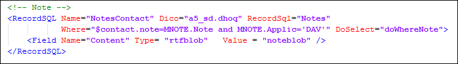

L’attribut DoSelect permet d’optimiser l’indexation par lot, en particulier des notes et des pièces jointes. En effet, il y a rarement une note ( et/ou une pièce jointe) pour chaque client.
La valeur de l’attribut DoSelect permet de savoir s’il y a effectivement des éléments dans la table de niveau inférieur, sans être obligé d’exécuter la requête select qui est gourmande en ressource.
Par exemple le champ T2.Note indique s’il y a une note associé au contact.
Dans la description du document Search

Dans le <Select> du RecordSQL Contact
Sans cette optimisation, s’il y a 100 000 clients, on exécute 200 001 select (notes + pièces jointes) même s’il n’y a que 10 000 notes et pièces jointes.
Avec l’optimisation on exécute 10 001 select.